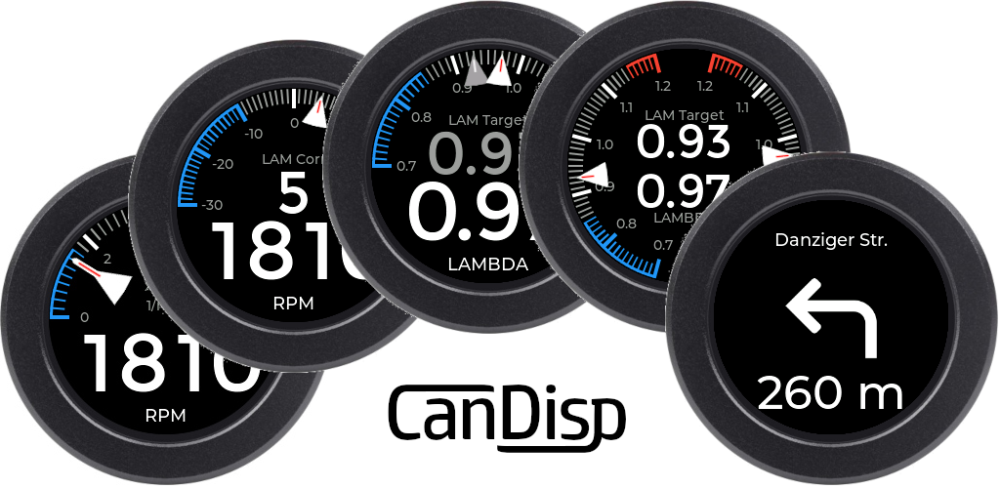
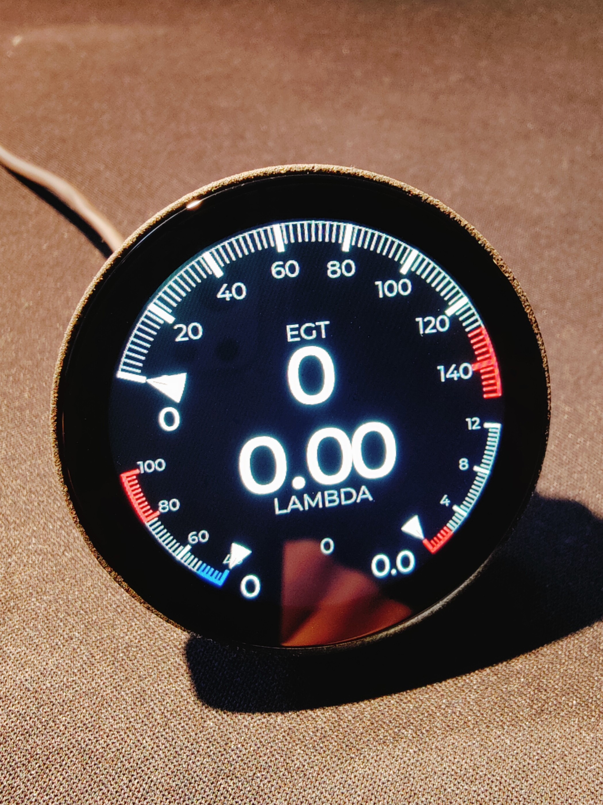

CAN Bus Display für Echtzeit-Fahrzeugdaten
Für Integration in Entwicklungs-, Tuning- und Motorsportumgebungen
CanDisp ist ein eigenständiges CAN Bus Display zur Anzeige von Fahrzeugdaten in Echtzeit. Die Auswertung erfolgt direkt aus dem CAN-Bus, ohne Eingriff in bestehende Steuergeräte.
Das Gerät arbeitet als passiver CAN-Bus Listener und sendet selbst keine Nachrichten. Bestehende Steuergeräte werden dadurch nicht beeinflusst.
Das CanDisp unterstützt die Anzeige von Turn-by-Turn Navigationshinweisen über Bluetooth Low Energy (BLE).
Die Verbindung erfolgt über die Android-App "CanDispNav". Unterstützt werden die Navigationshinweise von Google Maps.
Kompakte 52-mm-Anzeigeeinheit mit transflektivem IPS-Display für gute Ablesbarkeit auch bei direkter Sonneneinstrahlung.

Der Anschluss erfolgt direkt an den CAN-Bus sowie die Spannungsversorgung. Eine Integration in bestehende Fahrzeugsysteme ist ohne Änderungen an Steuergeräten möglich.
Das Gerät ist CE-zertifiziert und erfüllt die geltenden Anforderungen für elektronische Baugruppen.
Bedienungsanleitung, Firmware, Beispielkonfigurationen und technische Dokumentation befinden sich in den folgenden Bereichen:
Für technische Fragen oder Integrationsanfragen:
candisp [auf] posteo [punkt] de